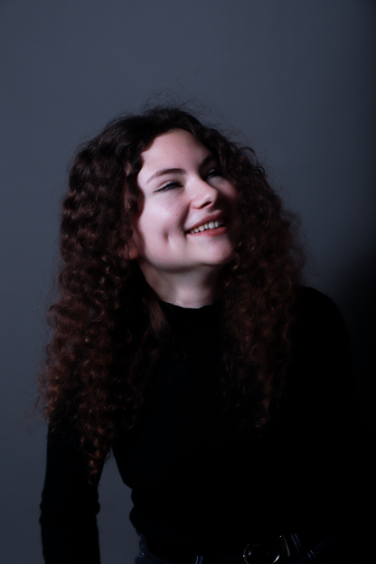
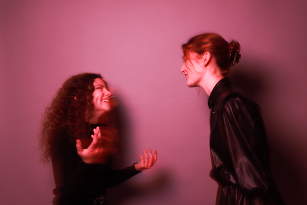
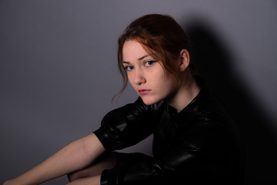
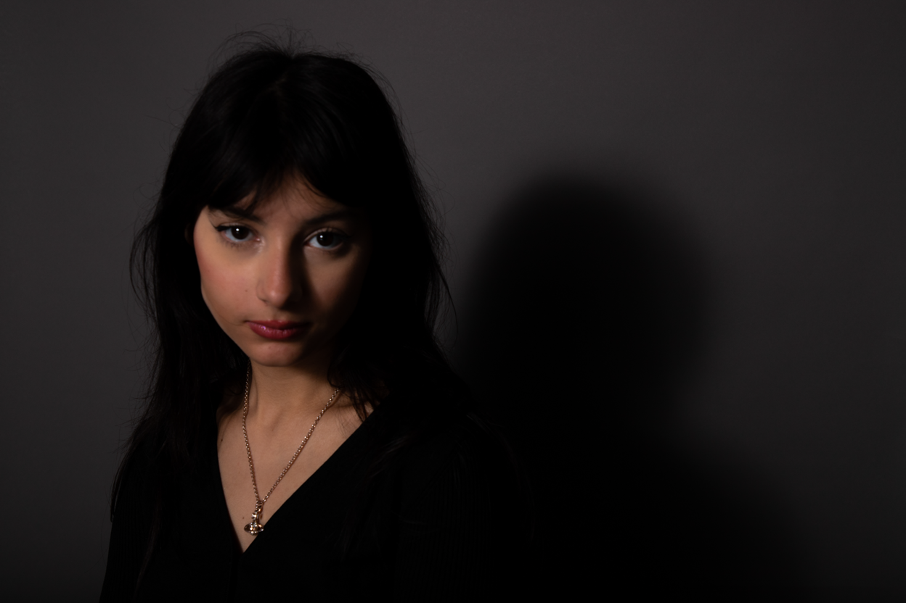
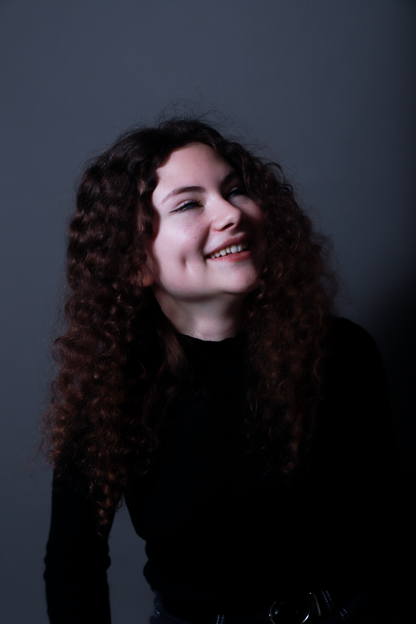
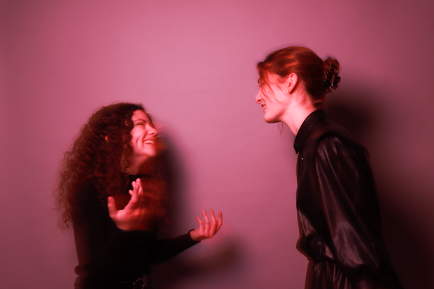
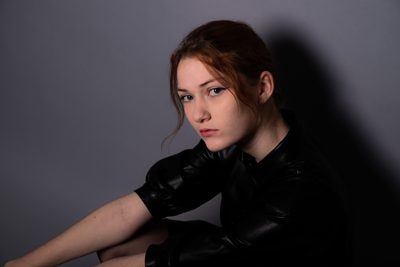
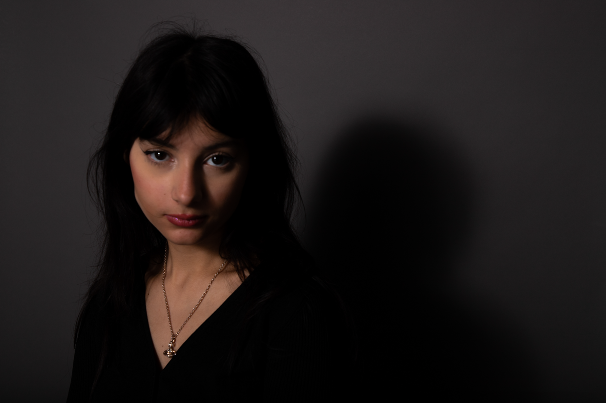

série photographique de portraits.
à travers cette série, j’ai voulu capturer le visage de mon modèle en essayant de créer une ambiance inspirée de ce dernier.
c’est en jouant sur les plans et les couleurs que j’ai tenté de renvoyer l’image que me renvoyait mon sujet.
j’ai également voulu jouer avec la notion de mouvement et de spontanéité en capturant des moments moins ‘scénarisés’, ou tout simplement en bougeant un petit peu mon appareil photo.
modèles : manon faroult (1,2,3), chloé chevalier (3,4), faïza azaïzia (5).
traitement sur caméra raw.
scroll à l'horizontal →

 






